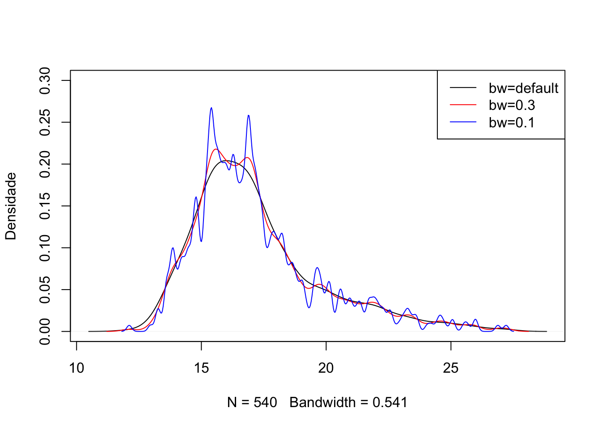
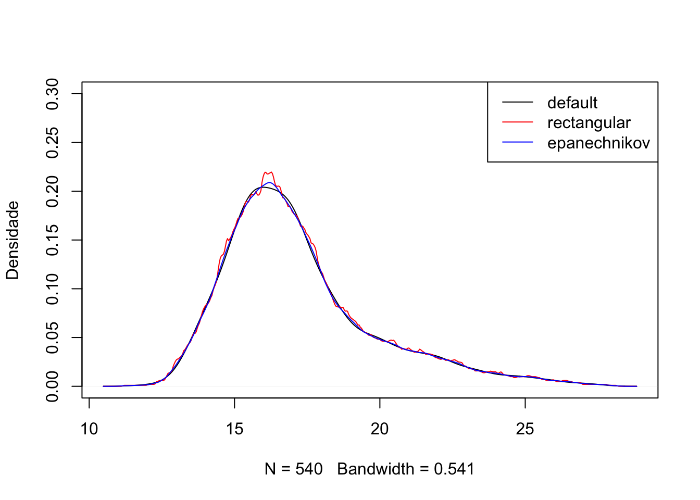
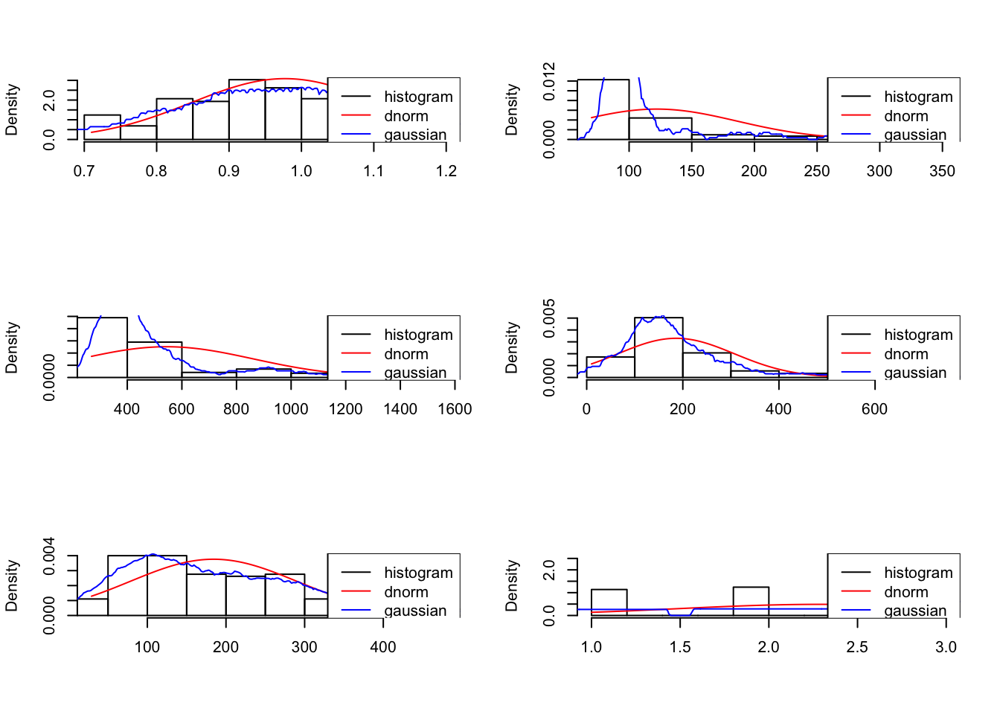
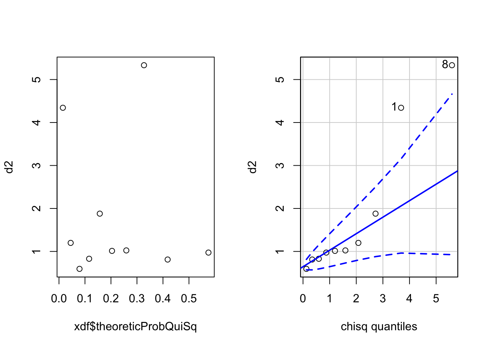

2 Lesson 3
dados2 <- as.data.frame(readxl::read_xlsx(file.path(datasetsDir, "data2.xlsx")))
s <- seq(min(dados2$imc),max(dados2$imc), length.out = length(dados2$imc))
hist(
dados2$imc, probability = T, xlim=c(min(dados2$imc),max(dados2$imc)), main=NULL, xlab=NULL)
lines(s,dnorm(s,mean(dados2$imc),sd(dados2$imc)))
plot(density(dados2[,1]),ylim=c(0,0.3),main = " ",ylab = "Densidade")
lines(density(dados2[,1],bw = 0.3),col="red")
lines(density(dados2[,1],bw = 0.1),col="blue")
legend("topright",col=c(1,2,4),lty=1,legend = c("bw=default","bw=0.3","bw=0.1"))
plot(density(dados2[,1]),ylim=c(0,0.3),main = " ",ylab = "Densidade")
lines(density(dados2[,1],kernel = "rectangular"),col="red")
lines(density(dados2[,1],kernel = "epanechnikov"),col="blue")
legend("topright",col=c(1,2,4),lty=1,legend = c("default","rectangular","epanechnikov"))
dados1 <- as.data.frame(readxl::read_xlsx(file.path(datasetsDir, "data1.xlsx"), col_names = F))
par(mfrow=c(3,2))
plots <- apply(dados1,2,function(iVar){
s <- seq(min(iVar),max(iVar), length.out = length(iVar))
hist(
iVar, probability = T, xlim=c(min(iVar),max(iVar)), main=NULL, xlab=NULL)
lines(s,dnorm(s,mean(iVar),sd(iVar)),col="red")
lines(density(iVar,kernel = "rectangular"),col="blue")
legend("topright",col=c(1,2,4),lty=1,legend = c("histogram","dnorm","gaussian"))
})
par(mfrow=c(1,1))2.0.1 Estatísticas Ordinais
2.0.1.1 Minimum
\[ x_\left(1\right) = x_\left(1n\right) \]
2.0.1.2 Maximum
\[ x_\left(n\right) = x_\left(nn\right) \]
2.0.1.3 Inverso da função distribuição Gaussiana
qnorm(0.975)## [1] 1.9599642.0.1.4 QQ Plot
x <- c(-1.00,-0.10,0.16,0.41,0.62,0.80,1.26,1.54,1.71,2.3)
xdf <- as.data.frame(x)
names(xdf) <- c("values")
nLength <- length(xdf$values)
xdf$empProb <- sapply(1:nLength,function(idx){
(idx-0.5)/nLength
})
xdf$theoreticProb <- sapply(xdf$empProb,function(quantile){
qnorm(quantile)
})
knitr::kable(xdf)| values | empProb | theoreticProb |
|---|---|---|
| -1.00 | 0.05 | -1.6448536 |
| -0.10 | 0.15 | -1.0364334 |
| 0.16 | 0.25 | -0.6744898 |
| 0.41 | 0.35 | -0.3853205 |
| 0.62 | 0.45 | -0.1256613 |
| 0.80 | 0.55 | 0.1256613 |
| 1.26 | 0.65 | 0.3853205 |
| 1.54 | 0.75 | 0.6744898 |
| 1.71 | 0.85 | 1.0364334 |
| 2.30 | 0.95 | 1.6448536 |
plot(xdf$empProb , xdf$theoreticProb )
car::qqp(x,distribution="norm")
## [1] 1 10defaultMar <- c(5, 4, 4, 2) + 0.1
par(mfrow=c(3,2),mar=c(0,0,0,0))
plots <- apply(dados1,2,function(iVar){
car::qqp(iVar,distribution="norm")
})
par(mfrow=c(1,1),defaultMar)2.0.2 Transforming to Distance (slide 21)
x1 <- c(126974,96933,86656,63438,55264,50976,39069,36156,35209,32416)
x2 <- c(4224,3835,3510,3758,3939,1809,2946, 359,2480,2413)
X <- matrix(c(x1,x2),10,2)
mx <- colMeans(X)
S <- var(x)
d2 <- c()
distanceCsquare <- function(){
el - mean
}
for(i in 1:nrow(X)){
d2[i] <- (t(X[i,]) - colMeans(X))%*%solve(var(X))%*%(X[i,]-colMeans(X))
}
## o u é que tem distribuição beta
## quantis teoriocos qui-quadrado
qi_chi <- round(qchisq(xdf$empProb, ncol(X)),3)
qi_chi## [1] 0.103 0.325 0.575 0.862 1.196 1.597 2.100 2.773 3.794 5.991xdf$theoreticProbQuiSq <- qi_chi
## quantis teoricos de beta
qi_beta <- round(qbeta(xdf$empProb, shape1 = ncol(X)/2, shape2=(nrow(X)-ncol(X)-1)/2),3)
qi_beta## [1] 0.015 0.045 0.079 0.116 0.157 0.204 0.259 0.327 0.418 0.575xdf$theoreticProbQuiSq <- qi_beta
## aqui deveria ser u em vez de d2
par(mfrow=c(1,2))
plot(xdf$theoreticProbQuiSq, d2)
car::qqp(d2,distribution="chisq",df=ncol(X))
## [1] 8 1hypothesisVal <- c(11,3)
X <- matrix(c(6,10,8,9,6,3),3)
Xmeans <- colMeans(X)
S <- var(X)
Sminus1 <- solve(S)
t(nrow(X)*(Xmeans - hypothesisVal))%*%Sminus1%*%(Xmeans - hypothesisVal)## [,1]
## [1,] 7